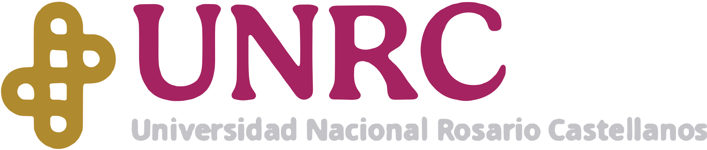
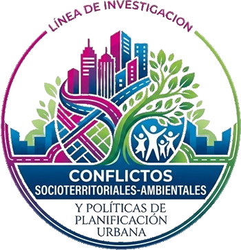
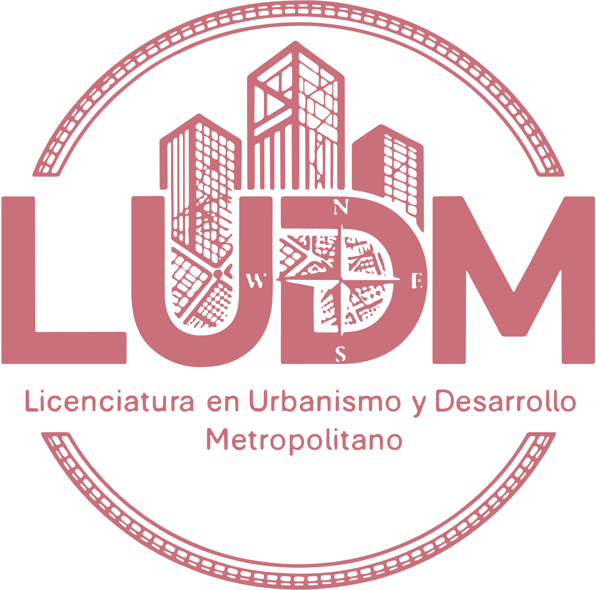

LCAZUCiencias Ambientales
Universidad Nacional Rosario Castellanos
2do Encuentro de Presentación de Avances de Trabajo Terminal
Fomentar el intercambio académico entre tesistas de Urbanismo y Ciencias Ambientales mediante la presentación y discusión de avances de investigación y otras formas de titulación, promoviendo el diálogo interdisciplinario, la retroalimentación crítica y la generación de propuestas para abordar los retos urbanos y ambientales desde una perspectiva integral y sostenible.
Cronograma de actividades● LUDM · Urbanismo● LCAZU · Ciencias Ambientales
Día 1Lunes 23
InauguraciónApertura oficial y presentación de objetivos
Fernanda Nallely Victorica OrduñaLUDMComercio informal y espacio público, Plaza Zarco
Karina Ramírez AyalaLCAZUInundaciones, riesgo y vulnerabilidad, Condominio Nacional 55
Martín Pérez RosalesLUDMPresupuesto participativo, Tepalcates II, Iztapalapa
Alejandra Imperia JuncoLCAZUGreenwashing y hábitos de consumo de jóvenes de la UNRC
RecesoDescanso y networking
María José Pérez CruzLUDMMujeres y espacio público, San Miguel Teotongo
Guadalupe Hilario AmezquitaLCAZUAlmacenamiento de carbono, Sierra de Guadalupe
Litzia Olvera ZambranoLUDMSegregación socioespacial y violencia, Tepito
Plenaria de estudiantesDiálogo y síntesis de los avances
Día 2Martes 24
Abraham Cázares HernándezLCAZUIsla de calor urbana superficial, Iztapalapa
Juan Pablo CalvilloLUDMTianguis informal y espacio público, col. Juan Escutia
Aldo Esteban Mejía SandovalLCAZUDesarrollo inmobiliario y patrimonio biocultural, Fuentes Brotantes
Héctor Juan Arguello PedrazaLUDMGentrificación en la colonia Roma
María del Rosario Rodríguez BarreraLCAZUPlan de Acción para proteger a la vaquita marina (SEMARNAT)
RecesoDescanso y networking
Salvador Galván PérezLUDMDeterioro ambiental y zona construida, Bosques de Aragón
Estudiante de LCAZULCAZUAvance de trabajo terminal
Plenaria de estudiantesDiálogo y síntesis de los avances
Día 3Miércoles 25
Alberto Mendoza VázquezLUDMCertificación LEED e impacto ambiental, Torre Reforma
Guadalupe Pérez TéllezLCAZUBriofitas en un gradiente altitudinal, río Magdalena
Daniela Aimeé Cortés JuárezLUDMGentrificación habitacional, colonia San Rafael
Jocelyn Sepúlveda CobaxinLCAZUTráfico de trajineras y calidad del agua, Xochimilco
Brenda Georgina Aguiñaga RamírezLUDMComercio ambulante y habitabilidad, calle Aztecas
RecesoDescanso y networking
Julián Adán Cardona DíazLCAZUResiduos sólidos y de construcción, barranca Tecamachalco
Sarai Lizu Jiménez FernándezLUDMCiudad de los 15 minutos, Tlatelolco
Plenaria de estudiantesDiálogo y síntesis de los avances
ClausuraCierre oficial del encuentro
📍 Lugar
Auditorio de la Unidad Académica GAM, UNRC
Avenida 506 s/n, Col. San Juan de Aragón II Sección, Alcaldía Gustavo A. Madero, C.P. 07969, Ciudad de México
🗓️ Fecha
Lunes 23 al miércoles 25 de noviembre
Escanea y consulta el programaPrograma completo, ejes temáticos y el Laboratorio Urbano interactivo.